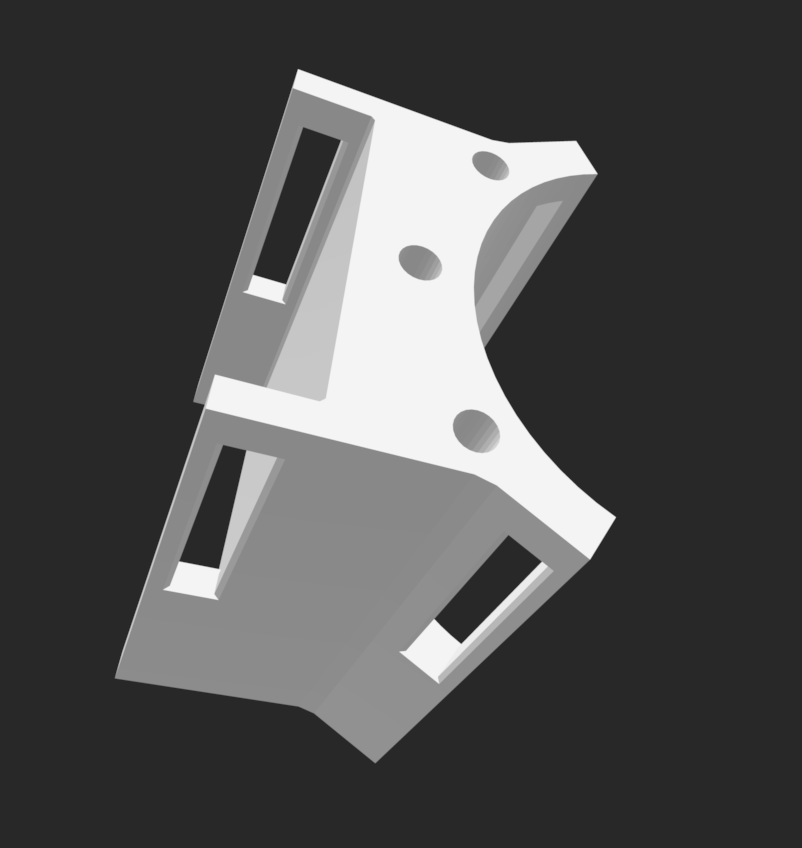
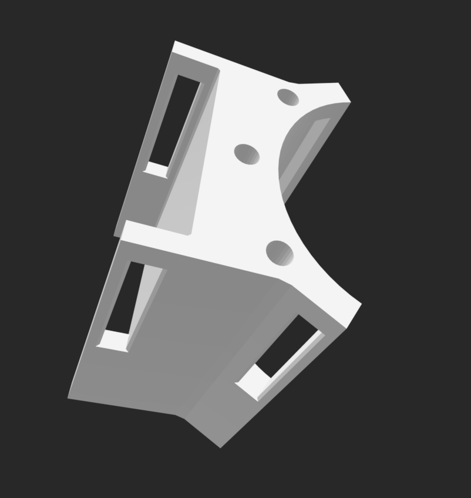

Generic MIDI hand glove
Uni project, Hamburg University of Applied Sciences
2019
The MIDI Glove is a wearable music interface I developed using Dehnungsmessstreifen (strain gauges) and an Arduino microcontroller. It translates hand and finger movements into MIDI signals, allowing the glove to act as a generic MIDI controller in any DAW, such as Ableton Live. By mapping finger bends to MIDI parameters, users can control synthesizers, effects, and automation in real time through intuitive gestures — making the glove a tactile, expressive performance tool that bridges human motion and digital sound. This project combines sensor-based hardware prototyping, embedded programming, and MIDI protocol implementation, with the goal of exploring new ways of interacting with music production environments.
 
